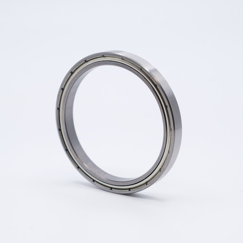
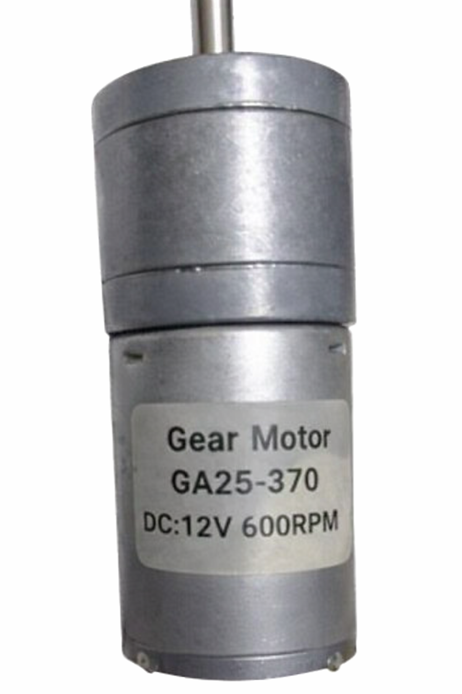
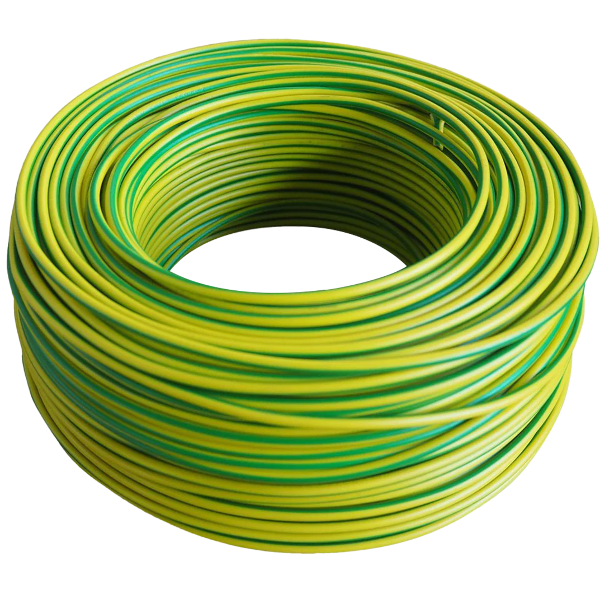

Materials Breakdown
Component Image
Technical Description & Purpose
Acrylic Sheet
Utilized for structural housing due to its high strength-to-weight ratio and transparency for visual inspection.

Precision Bearing
Critical for reducing rotational friction at the turbine hub, facilitating a lower startup wind speed.

DC Gear Motor (GA25-370)
Primary generator unit. This 12V 600RPM motor converts mechanical rotation into electrical energy.
PLA+ Filament
High-durability 3D printing material used to fabricate the NACA 4412 airfoil blades.

Quick Adhesive & Activator
Industrial bonding system used to secure the gearbox assembly against high vibration forces.

Panel Wiring
Insulated copper wiring used to transmit power from the generator without significant resistance loss.
Spruce Plywood
The foundation of the project. It provides a stable platform and dampens operational noise.